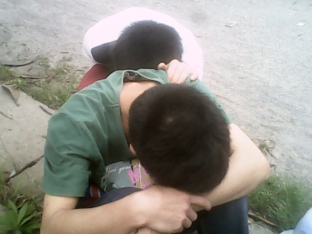

如果这都不算爱
是否爱就是忍耐不问该不该 都怪我没能耐转身走开 难道牺牲才精彩伤痛才实在 要为你流下泪来才证明是爱 如果这都不算爱 我有什么好悲哀 谢谢你的慷慨 是我自己活该 如果这都不算爱 我有什么好悲哀 你只要被期待 不要真正去爱 oh no 还要怎么的表白才不算独白 都怪我没能耐转身走开 难道牺牲才精彩伤痛才实在 要为你流下泪来才证明是爱 你的感情太易割爱 把未来转眼就删改 我的心却为你空白了一块 如果这都不算爱 我有什么好悲哀 谢谢你的慷慨 是我自己活该 如果这都不算爱 我有什么好悲哀
葬花词 ---- 林黛玉
花谢花飞飞满天， 红消香断有谁怜。 游丝软细飘春榭， 落絮轻粘扑绣窗。 闺中女儿惜春暮， 愁绪满怀无著处。 手把花锄出绣窗， 忍踏落花来复去。 柳丝榆荚自芳菲， 哪管桃飘与李飞。 桃李明年能再发， 明年闺中知有谁。 三月香巢初垒成， 梁间燕子太无情。 明年花发虽可啄， 却不道人去梁空巢已倾。 一年三百六十日， 风刀霜剑严相逼。 明媚鲜妍能几时， 一朝漂泊难寻觅。 花开易见落难寻， 阶前愁煞葬花人。 独把花锄偷洒泪， 洒上空枝见血痕。 杜鹃无语正黄昏， 荷锄归去掩重门。 青灯照壁人初睡， 冷雨敲窗被未温。 怪侬底事倍伤神， 半为怜春半恼春。 怜春忽至恼忽去， 至又无言去不闻。 昨宵亭外悲歌发， 知是花魂与鸟魂。 花魂鸟魂总难留， 鸟自无言花自羞。 愿侬此日生双翼， 随花飞到天尽头。 天尽头，何处有香丘。 未若锦囊收其骨， 一坯净土掩风流。 质本洁来还洁去， 不教污淖陷渠沟。 尔今死去侬收葬， 未卜侬身何日丧。 侬今葬花人笑痴， 他年葬侬知是谁。 试看春残花渐落， 便是红颜老死时。 一朝春尽红颜老， 花落人亡两不知。
什么是爱情？
爱情是一个永恒的话题，但同时也是一些人刻意回避的话题。
有人说，爱情是扯皮筋，往往最不愿意放手的那个人受到的伤害最重。 有人说，爱情是雨水，缘分使他们相遇，在河流中几经波折，最终流入汪洋，不分你我。 有人说，爱情如昙花，爱情如昙花般美丽，也如昙花般甜美，可也仅仅是短短的一瞬罢了。 我不知有多少人能够像那雨水般修成正果，我知道更多的是，被放弃后那种孤立无援的悲伤。万分的不舍，却换不来伊人的一次回眸。这是一种怎样的悲哀！
我不知道什么是爱情，也不想知道。我只知道两个人在一起，就是要互相理解对方体谅对方，尽自己所能的去帮助对方。什么不求回报的付出，全是扯淡。
回报有很多种，也许，只是你的一句关心话语，也许，只是你为他端来的一杯热茶。就是这么简单。如果当你接受了对方付出而毫无表示的时候，虽说目前无伤大雅，
但是为以后却埋下了致命打击。每个人都有这样的心理，付出多少汗水，将收获多少果实。如果当一个人发现辛辛苦苦的干了一年，回头一看田地里面什么也没有长。
估计不论是谁心里都会有道梗，当这个梗越积越多，越堆越高时，你会发现你已经迈不过去了。最后爆发的会是什么？吵架？分手？还是离婚？为什么会这样呢？
那是因为，当男人在为女人多次付出后没有得到一点的关心与爱护，就会在心里滋生这样到底值不值这个问题，也就会慢慢减少这种无限的付出，当女人发现享受到的这种被爱的
感觉越来越少时，就会在想，你是不是不爱我了，或者是外面是不是有了别人。于是。。。。（后面读者自己脑补）。男人想要的爱情其实很简单，有一个始终关心自己，支持自己
为自己分担后顾之忧足矣。
以上仅代表个人看法，不喜请略过！
野窗 · 风铃
总在 空空的，张望
远方 曾熟悉的小径 总在 毫无希望的， 等待 玻璃外 枯瘦的挂念 关于你的记忆 都远了 思念直至 发黄，甚至凋零 曾经的 依偎里 你侬我侬都是期待着 …… 一片大雁的身影 今夜开始了北风 只是 抹不去的记忆 记忆 深处的疼痛 开始 结成了冰凌 虽然 春花漫野 思念 已渗入迷蒙 细雨再深一些，白雾再深一些回忆的风铃
是否 仍在渴望遥远的梦境 噩梦 袭来那一刻突然清醒 发现 枕边的落泪晶莹 散发着 异样又奇特的心情 这已受伤的坚强该如何扶平 对面如刀刃般的话语依然冷漠如冰 身边的忧郁始终无法安宁 错误的蔓延根本不能请求暂停 要怎样 才能挽回那愚昧的决定 黑夜里 只剩下伤痛直到天明 没有定义的委屈却早已数不清 如何去传递这份无言的心情 面对生活的艰辛 犹如面对的是那不堪的泥泞 回首童年似乎还笑语盈盈 随着岁月的成长欢乐就静止恢复平静 什么时候 能够走出人生的迷茫困境 抬头 又看见那窗外的串风铃 回忆中 呼吸的空气 现在依然清新
风铃
紫色的风铃
在风中浅浅吟唱
清脆的声响
回荡在无人的街巷
没有人
倾听它的忧愁
没有人
闯入它的梦乡
风吹乱的节奏
叙述着一段古老的故事
故事的结局
总是有些惆怅
夕阳的余晖缓缓落幕
紫色的风铃
摇曳着童话
有谁能读懂它的忧伤
站在无人问津的街旁
影子映在一扇未打开的窗上
有谁听见
寂寞在歌唱
紫色的风铃
诉说着淡淡的哀愁
风轻轻地卷走了
那晚散落一地的月光
往昔的回忆
- 